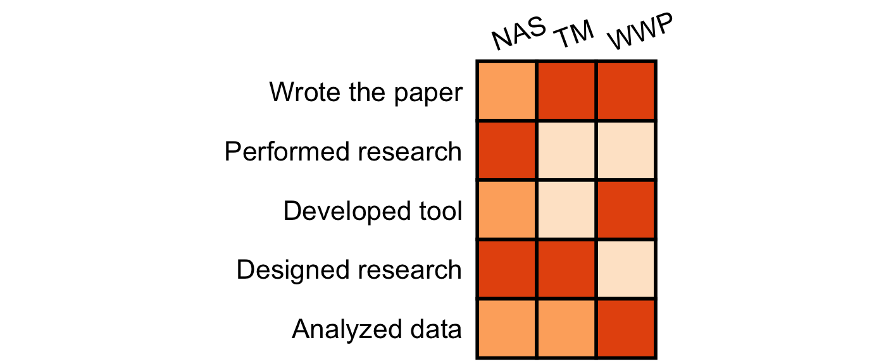
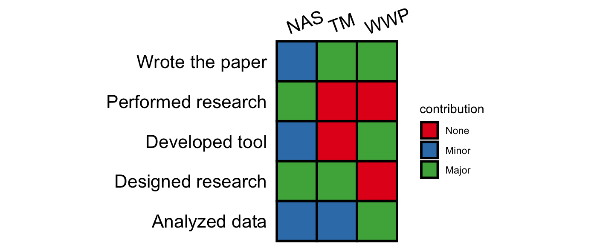
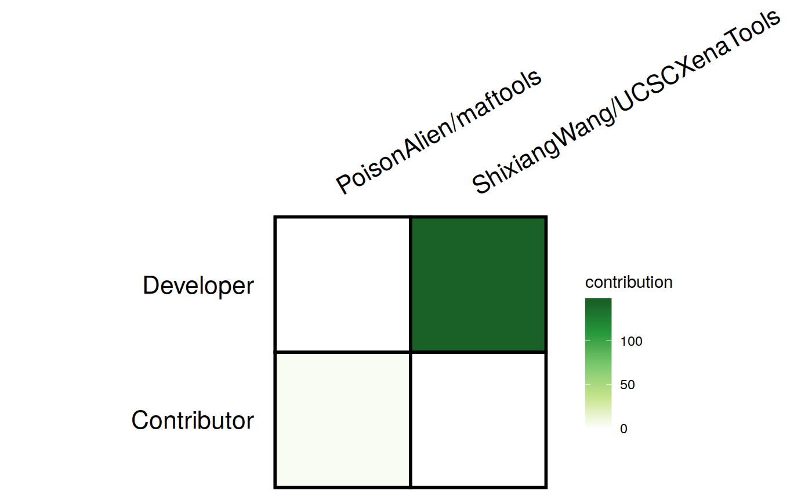
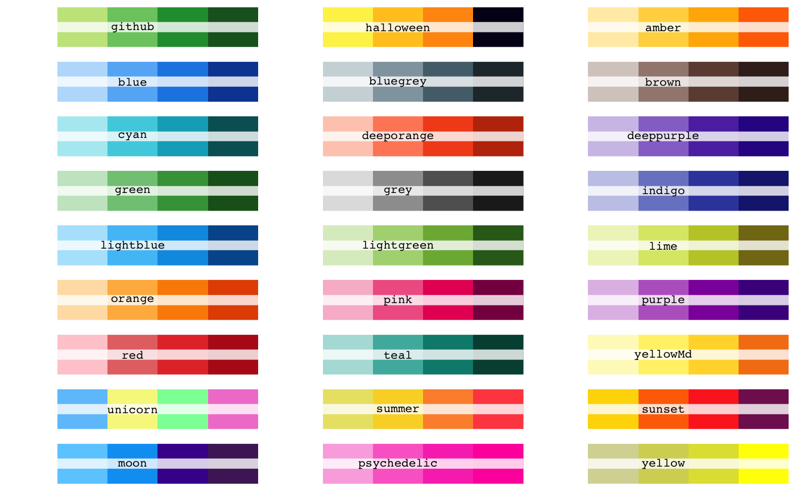
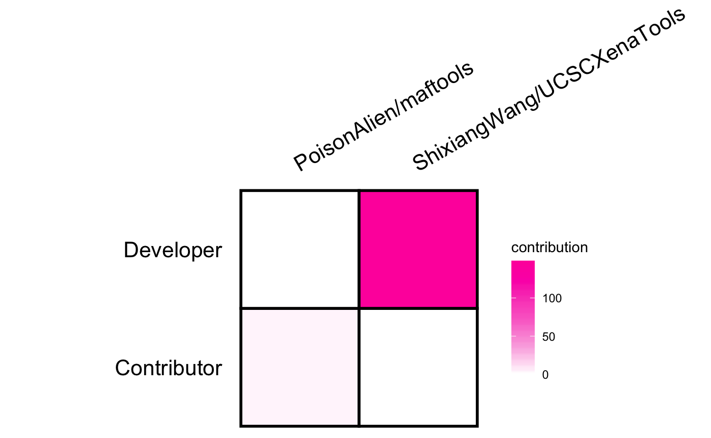
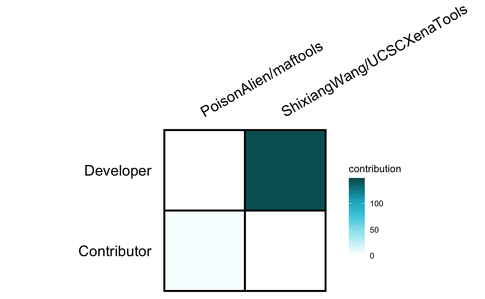

A Tiny Contribution Table Generator Based on ggplot2
Shixiang Wang ShanghaiTech. University
2019-07-12
contribution.RmdThe goal of contribution is to generate contribution table for credit assignment in a project. This is inspired by Nick Steinmetz (see twitter https://twitter.com/SteinmetzNeuro/status/1147241138291527681).
Authors contributions sections are new and still don’t appear in major journals, but can be improved. Rather than text listing each author’s contributions, the same data can be presented as a table with rows corresponding to contributions and columns for each author.
Advantages include:
Graphics are faster and easier to comprehend. They are also easier to locate in the document.
This format can be readily augmented with additional information, such as distinguishing between ‘major’ and ‘minor’ contributions of each type.
This format can be read as easily in either direction, answering both “Who did X?” and “What did person Y do?” equally.
This format lends itself to a nice extension for including your author contribution information on your CV: a similar table where each column is one of your papers.
A difficulty with this is the diversity of terminology used, which would be helped by refinement and more widespread adoption of the CRediT framework (https://www.casrai.org/credit.html ).
Feature
- Support table type
- 3-level contribution (i.e. ‘None’, ‘Minor’ and ‘Major’)
- numeric contribution
- Dataset
palettecontains 27 color maps
Installation
You can install the released version of contribution from CRAN with:
And the development version from GitHub with:
Basic example
This is a basic example which shows you how to plot a simple contribution table:
library(contribution)
data("demo")
demo
#> # A tibble: 5 x 4
#> Class WWP NAS TM
#> <chr> <chr> <chr> <chr>
#> 1 Designed research <NA> Major Major
#> 2 Performed research <NA> Major <NA>
#> 3 Developed tool Major Minor <NA>
#> 4 Analyzed data Major Minor Minor
#> 5 Wrote the paper Major Minor MajorThe accepted data format is a data.frame whose first column show the role and the other columns show the people or projects. This format is easy to create using R or other tools like Excel.
For a 3-level contribution table, only Minor and Major are valid, a NA value should put in cell for no contribution.

The white box represents no contribution, the grey box represents minor contribution, and the black box represents major contribution.
The table is nice, easy to read. The result is a ggplot object, so you can modify in your way!
You can also use other colors and scale_fill_* function from ggplot2 to map colors:
library(ggplot2)
generate(demo, text_angle_x = 20, color_map = scale_fill_brewer(palette ="Oranges"))
When it is not easy to see the meaning of color, you can show the legend.
generate(demo, text_angle_x = 20, color_map = scale_fill_brewer(palette ="Set1"), show_legend = TRUE)
GitHub contribution
To show how to generate numeric contribution table, here we use commit number of GitHub project as an example.
To get data from GitHub, I created a function pull_github().
# Github project contributions
my_contr = dplyr::tibble(
repo = c("UCSCXenaTools", "maftools"),
owner = c("ShixiangWang", "PoisonAlien"),
username = "ShixiangWang",
role = c("Developer", "Contributor"))
my_contr
#> # A tibble: 2 x 4
#> repo owner username role
#> <chr> <chr> <chr> <chr>
#> 1 UCSCXenaTools ShixiangWang ShixiangWang Developer
#> 2 maftools PoisonAlien ShixiangWang Contributor
contr_tb = pull_github(data = my_contr)
contr_tb
#> # A tibble: 2 x 3
#> role `PoisonAlien/maftools` `ShixiangWang/UCSCXenaTools`
#> <chr> <int> <int>
#> 1 Contributor 4 0
#> 2 Developer 0 145Now we have data format the generate() function can accept, show the plot!

Palette
To change colors of contribution graph, I generated a dataset palette according to themes provided by project github-contribution-color-graph.
We can show the palette and choose the color we like.

Just put the name to option palette_name.


More custom options please run ?generate in R console.
CRediT
CRediT can help assign the role, this data has been stored in this package.
Show whole table.
| Role | Definition |
|---|---|
| Conceptualization | Ideas; formulation or evolution of overarching research goals and aims. |
| Data curation | Management activities to annotate (produce metadata), scrub data and maintain research data (including software code, where it is necessary for interpreting the data itself) for initial use and later re-use. |
| Formal analysis | Application of statistical, mathematical, computational, or other formal techniques to analyse or synthesize study data. |
| Funding acquisition | Acquisition of the financial support for the project leading to this publication. |
| Investigation | Conducting a research and investigation process, specifically performing the experiments, or data/evidence collection. |
| Methodology | Development or design of methodology; creation of models. |
| Project administration | Management and coordination responsibility for the research activity planning and execution. |
| Resources | Provision of study materials, reagents, materials, patients, laboratory samples, animals, instrumentation, computing resources, or other analysis tools. |
| Software | Programming, software development; designing computer programs; implementation of the computer code and supporting algorithms; testing of existing code components. |
| Supervision | Oversight and leadership responsibility for the research activity planning and execution, including mentorship external to the core team. |
| Validation | Verification, whether as a part of the activity or separate, of the overall replication/reproducibility of results/experiments and other research outputs. |
| Visualization | Preparation, creation and/or presentation of the published work, specifically visualization/data presentation. |
| Writing – original draft | Preparation, creation and/or presentation of the published work, specifically writing the initial draft (including substantive translation). |
| Writing – review & editing | Preparation, creation and/or presentation of the published work by those from the original research group, specifically critical review, commentary or revision – including pre- or post-publication stages. |